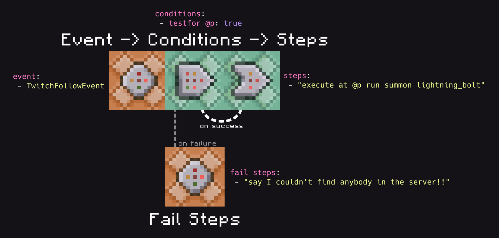
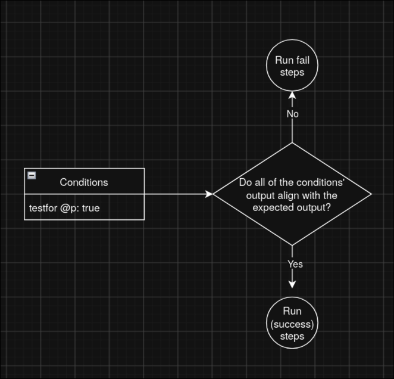

First Workflow
Overview
The primary (and easiest) way to write instructions for ChatTriggers is through workflows. Workflows are tiny YAML files that define conditions and commands.
# The name of the workflow. It can be anything.
name: Example Workflow
# Events that trigger this workflow
event:
# You can have more workflows if you'd like, and
# they'd all trigger this workflow.
- TwitchFollowEvent
# Commands that run before the workflow. If one of
# these commands succeed or fail unexpectedly,
# then it skips over the main steps. Optional.
conditions:
# You can add more, if you'd like. The format
# is <command>: <succcess/fail>, wherein `false`
# means you're expecting it to fail and `true`
# means you're expecting it to succeed.
- testfor @p: true
# By default, commands run at coordinated 0, 0, 0.
# @p points to the closest entity, so it will
# resolve to that. The testfor command returns
# false (fail) if there was no mob found.
# If conditions succeed (or you don't have any),
# then these commands here run.
steps:
- "execute at @p run summon lightning_bolt"
# ...you can add more if you'd like
# If conditions fail, then the commands here run.
fail_steps:
- "say I couldn't find anybody in the server!!"
# ...you can add more if you'd like
Structure
Workflows are composed of three primary parts: events, conditions, steps, and fail steps. Since almost everything is centered around commands, you may think of them as command blocks.

Events
Events are what trigger your workflows.
event:
- TwitchFollowEvent
You may have multiple events, and their order is arbitrary.
Using an unknown event will print out a warning, so don't worry about accidentally messing up the name of an event and having your workflow silently fail.
[20:44:36 WARNING]: [ChatTriggers] warning[W016]: unknown_event
[20:44:36 WARNING]: [ChatTriggers] --> workflows/bad_event.yaml:4
[20:44:36 WARNING]: [ChatTriggers] 4 | - EventThatDoesNotExist
[20:44:36 WARNING]: [ChatTriggers] | ^^^^^^^^^^^^^^^^^^^^^^^ Unrecognized event 'EventThatDoesNotExist'. Valid events are: AlertPlayingEvent, DonationEvent, LoyaltyStoreRedemptionEvent, MerchEvent, StreamLabelsEvent, StreamLabelsUnderlyingEvent, TwitchBitsEvent, TwitchBitsEvent, TwitchChannelPointsEvent, TwitchFollowEvent, TwitchFollowEvent, TwitchHostEvent, TwitchPredictionEvent, TwitchRaidEvent, TwitchRaidEvent, TwitchSubscriptionEvent, TwitchSubscriptionEvent.
For a list of all events, look at the events page.
Conditions
Conditions run before any steps do, and are optional. They're a mapping of commands and their expected outcome (i.e., if it fails or not), and different things happen depending on if all the commands align their expected outcome. If every command aligns with their expected outcome, then steps will be ran. Otherwise, if defined, fail_steps will be ran.
conditions:
- testfor @p: true

Let's pretend we're the parser reading your workflow. We'll evaluate the following workflow and choose which list of steps to run based off of the conditions.
name: Example Workflow
# Disregard the event for now, that's not what we're focused on.
event:
- TwitchFollowEvent
conditions:
- testfor @p: true
steps:
- "execute at @p run summon lightning_bolt"
fail_steps:
- "say I couldn't find anybody in the server!!"
In this example, there's only one condition: testfor @p: true. What we'll do is run the command testfor @p, and see the output.
> testfor @p
[21:04:53 ERROR]: No targets matched selector
Looks like the command failed! In this case, the outcome is false. The expected outcome is true, so we should run fail_steps.
Now, let's try the same scenario but with a player in the game. Say we have a player spawned in, and we run the commmand again:
> testfor @p
[21:12:55 INFO]: Found Chalupa7235
This time, the command succeeded! The outcome is true, and since the expected outcome is also true, we should run steps.
About Condition Commands
Condition commands run as regular commands. Every command you run as a conditional command works functionally the same as if you had ran the command in the server console or in game chat.
Conditions are optional, so you can just omit them from your workflow to just have the workflow run steps every single time.
Steps
Steps define the main actions that your workflows run. Steps are just a list of commands, and are ran in the same order as they are defined.
steps:
- "say Steps ran"
# Optional. If your conditions fail, and you don't have `fail_steps`, then nothing happens.
fail_steps:
- "say Fail steps ran"